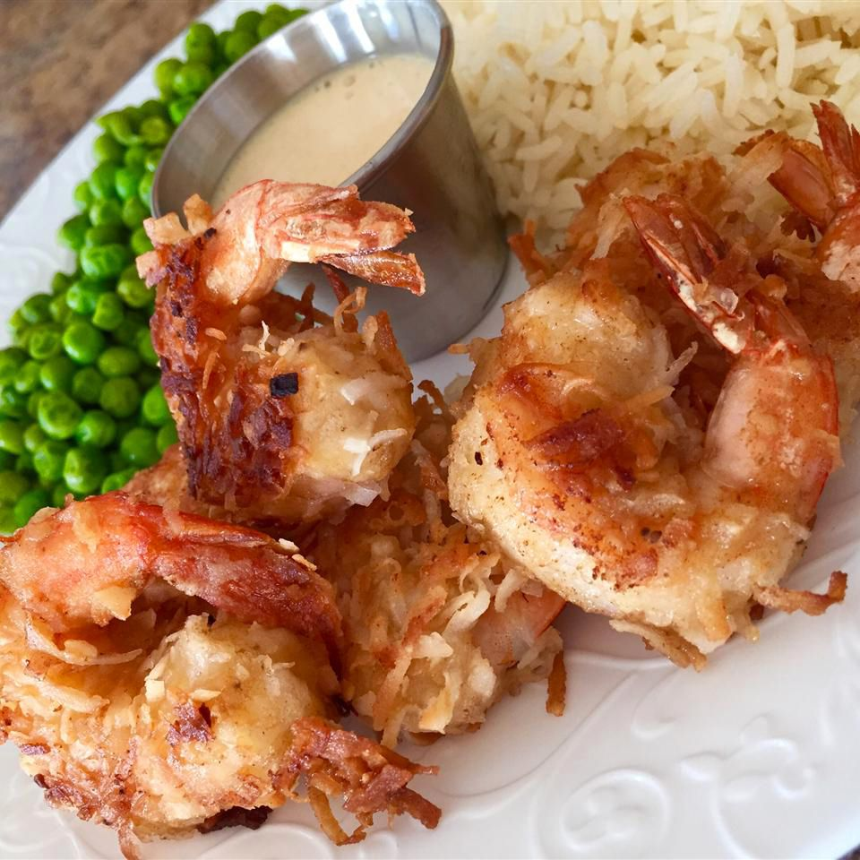

Coconut Shrimp

Description
Coconut shrimp is a shrimp dish prepared using shrimp and coconut as primary ingredients. It can be prepared as a crunchy dish with the shrimp coated and deep fried, pan-fried or baked, and as a sautéed dish using coconut milk and other ingredients. It can be prepared and served on skewers.
Ingredients
- 3/4 cup all-purpose flour, divided
- 2/3 cup beer
- 1 large egg
- 1 1/2 teaspoons baking powder
- 2 cups flaked coconut
- 24 medium raw shrimp, shelled, deveined, with tails attached
- 3 cups oil for frying
Steps
- Line a baking sheet with wax paper; set aside.
- Whisk together 1/2 cup flour, beer, egg, and baking powder in a medium bowl until smooth. Place coconut and remaining 1/4 cup flour in 2 separate bowls.
- One at a time, hold shrimp by the tail and dredge in flour, shaking off excess. Dip in beer batter; allow excess to drip off. Roll in coconut, then place on the prepared baking sheet. Refrigerate for 30 minutes.
- Heat oil in a deep fryer or large skillet to 350 degrees F (175 degrees C).
- Working in batches, fry shrimp in hot oil, turning once, until golden brown, 2 to 3 minutes. Use tongs to remove shrimp to paper towels to drain.